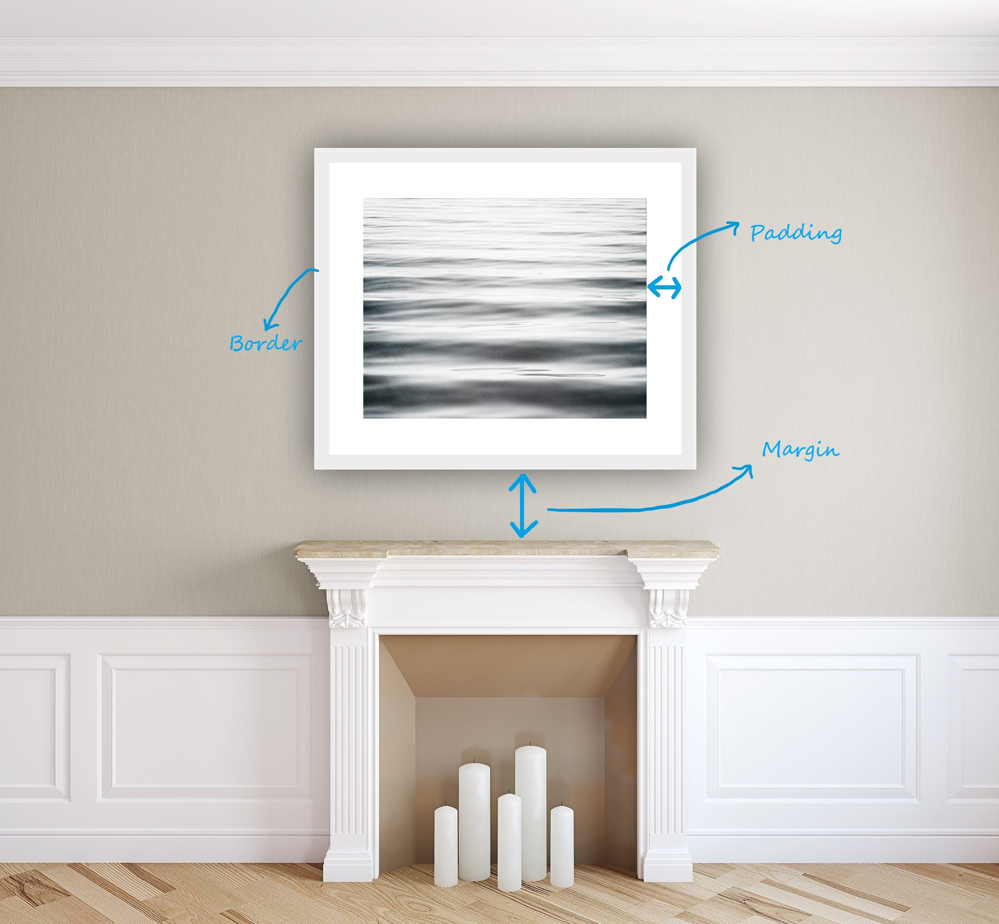
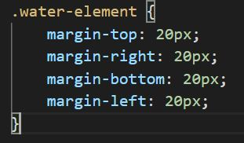
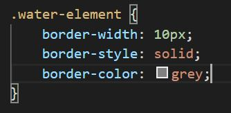
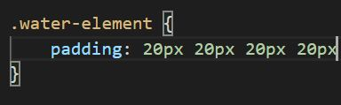

First I think it helps to think of a real world example that you can relate it to. Let's look at this picture below:
Here we have a framed picture of water which is hung up on the wall above a fireplace. The water is our element we are going to focus on (because, ya know, water is one of the elements!). It's placed above another element (in this case, the candles are our fire element). The picture frame can be thought of as the border (in this case a gray picture frame), the white space outside of the image of water can be thought of as the padding, and the distance between this framed picture and the mantlepiece of the fireplace can be thought of as the margin.
Now let's look at what this looks like without the metaphor and with some code instead.
The Margin is the outer space of an element. This is the space outside the element's border and the distance between elements.
You can customise the margin of an element by using the following code:
(In this instance there is a margin of 20px all of the way around the element)
The Border is the area directly around the element. Like a picture frame.
You can customise the margin of the border by using the following code:
(In this instance there is a border width of 10px, the border style is solid and the colour is grey)
The Padding is the inner space of an element. This is the space inside of it's border
You can customise the margin of the border using the following code:
(In this instance there is a padding of 20px all around the element. This time it has been specified in one line which is going around clockwise starting at the top)